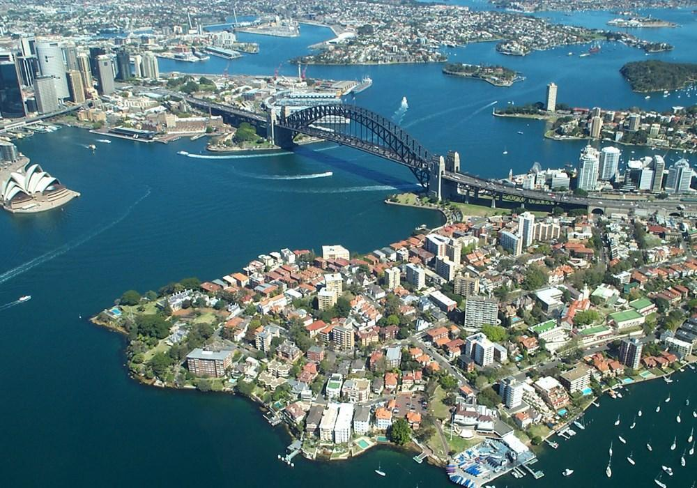
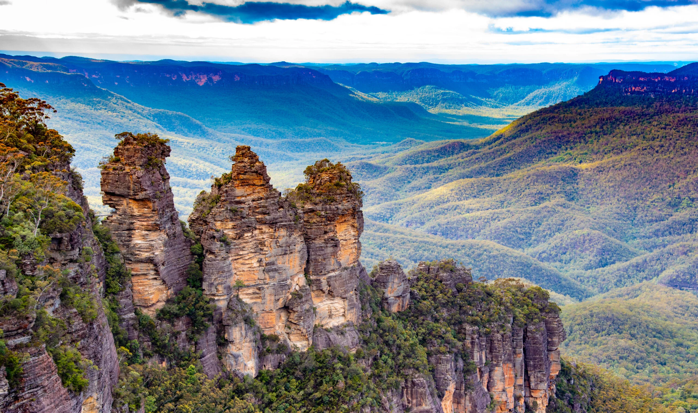

In acest stat se afla unele dintre cele mai frumoase plaje, tinuturi cu tufis in care se pot organiza plimbari, minunatul port Sidney si zona Muntilor Albastri, unde aerul este mai rece si mai proaspat.
Opera din Sydney nu este singurul motiv pentru care trebuie sa vizitati orasul. Zona portuara este foarte frumoasa, cu faimosul Pod Portuar, zona Pietrelor (zona in care au venit primii colonisti) si Chinatown (orasul chinezesc), printre alte locuri care merita sa le vedeti. Cele mai bune plaje se afla spre est – Bondi, Tamarama si Bronte – perfecte nu doar pentru a face plaja, ci si pentru surfing. Ce este mai interesant insa abia urmeaza: Golful Byron in capatul nordic, cunoscut si ca Mecca surferilor.

Muntii Albastri si Muntii Snowy fac parte din Great Dividing Range. In Parcul National Muntii Albastri se pot organiza excursii de o zi sau chiar mai multe, existand mai multe parcuri nationale in New South Wales. In Muntii Albastri se poate schia sau, cand se topeste zapada, va puteti aventura cu pluta sau puteti merge pe diverse trasee, admirand plantele si viata salbatica unica a Australiei.
În milioane de ani, roca moale a fost încet erodată dinspre coastă, creându-se un peisaj superb cu faleze stâncoase, râpe adânci, văi abrupte, cascade, peşteri şi păduri. Vara, eucaliptul creează negura albastră de la care regiunea şi-a luat numele.
În aceşti munţi sunt mai multe parcuri naţionale şi păduri de stat: majoritatea turiştilor se îndreaptă către oraşul Katoomba pentru a vizita Munţii Albaştri (Blue Mountains), pentru că acesta se află între două braţe ale Parcului Naţional Munţii Albaştri, iar de acolo poţi ajunge uşor la puncte de observare precum Trei Surori (deasupra), Echo Point şi Honeymoon.
Spre nord se află Govett’s Leap, care, aflat pe o faleză înaltă, oferă privelişti superbe, cu unul dintre cele mai frumoase peisaje de pe planetă – cascada Bridal Veils, Perry’s Lookout şi Pulpit Rock.
În vest sunt peşterile Jenolan, cele mai cunoscute din ţară, multe putând fi vizitate în cadrul unor tururi organizate.
Deşi primilor cercetători le-au trebuit peste 25 de ani să găsească un drum prin munţi, acum sunt o mulţime de trasee care te duc prin munţi şi văi sau prin pădurea Blue Gum de sub punctul de observare Perry’s Lookout, de-a lungul traseului Coachwood Glen Nature din valea Megalong. Sunt şi trasee lungi, dar şi o mulţime de oportunităţi de drumeţie, căţărat, escaladă sau călărie.